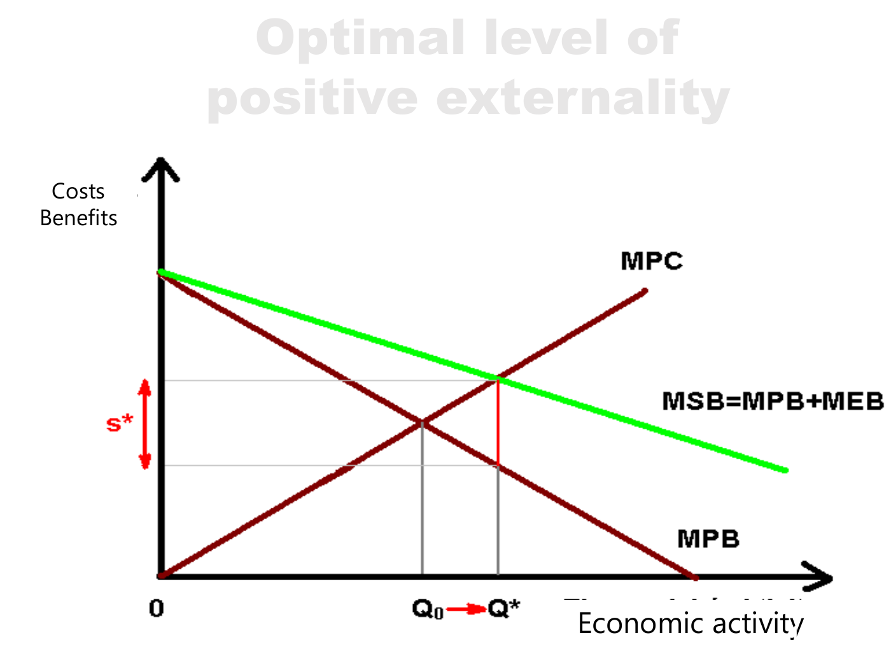
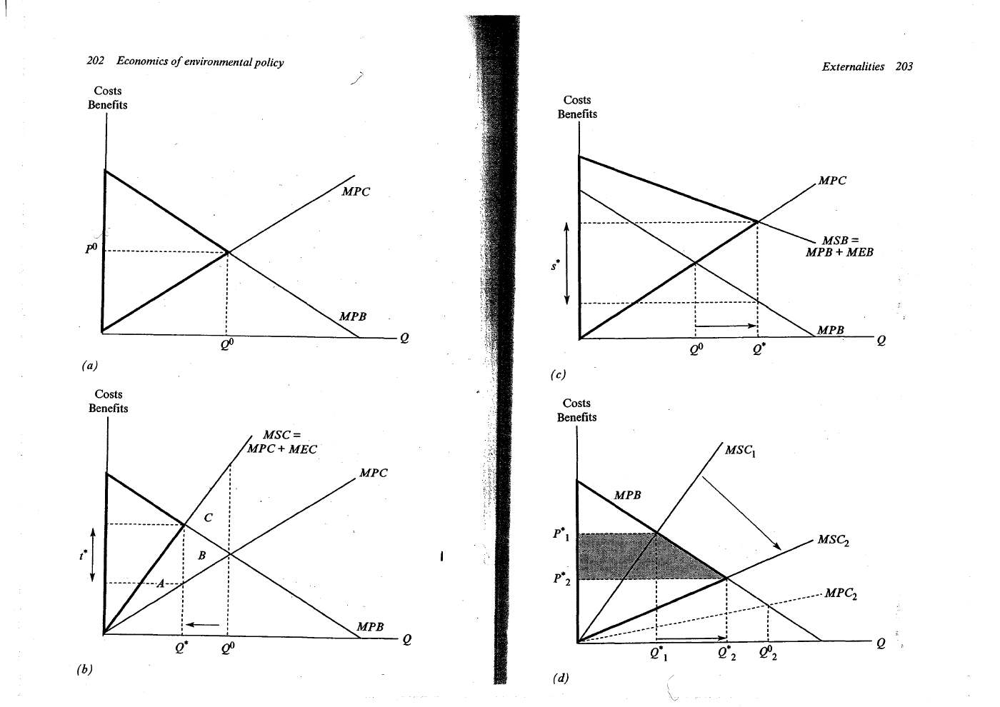

Derive private and social activity optima and marginal corrective signals
Explanation, worked examples and practice
Useful first: Identify economic externalities and apply conditional welfare criteria
Outcome and conditions
Derive the private and social activity levels Why a cost reduction is not a new external benefit Four different policy concepts
Study conditions, assessment scope and sources
Derive and calculate smooth private/social choices for negative and positive external effects, keeping marginal incentives separate from total harm. Required components: welfare_derivative_and_optima, marginal_vs_total_units, correction_and_first_best_limits. Supported work may use the cited notes; independent checks use no notes, internet, solution or hints. A basic calculator and blank paper are allowed; reasoning, formula selection and assumptions must be supplied by the learner. Numerical examples below are agent-created hypothetical instantiations unless explicitly labelled as a finished-note example. They do not assert current market or policy facts.
Prerequisites and checks
Check the prerequisites
O006-P1 / item_version 1: O005 is needed because a real neglected effect establishes which marginal term enters social welfare. Prompt: Does ordinary competitive price reduction alone add \(\mathrm{MEB}\)? Key: No; distinguish priced consumer benefit from a neglected real welfare relation before adding an external marginal benefit. Pass requires the keyed mechanism and qualification; partial means an omitted step; fail means a conflicting mechanism. Adequate committed evidence under a compatible criterion permits skipping this diagnostic. Otherwise repair through Outcome and conditions before continuing.
Motivation and explanation
Total welfare is the integral of marginal benefit minus all relevant marginal cost. With negative externality its derivative is \(\mathrm{MPB}-\mathrm{MPC}-\mathrm{MEC}\); an interior social maximum equates \(\mathrm{MPB}\) to \(\mathrm{MPC}+\mathrm{MEC}\), while private ignores \(\mathrm{MEC}\). A positive external benefit enters as \(\mathrm{MPB}+\mathrm{MEB}-\mathrm{MPC}\). Smoothness, interior feasibility and negative curvature matter: equality alone does not prove maximum. Marginal tax \(\mathrm{MEC}\) at the chosen social optimum can implement the harmful comparison in a first-best model, and marginal subsidy addresses the benefit wedge. Damage is an integral area in money while tax is money per unit activity; remaining damage can be positive because avoiding every last unit can sacrifice more benefit. A fall in private cost produces priced gains but need not remove \(\mathrm{MEC}\). Optimisation concerns the resulting welfare choice; compensation concerns transfers, regulation changes incentives, and narrow internalisation brings the effect into a market/common decision. They should not be treated as synonyms or universally equivalent under uncertainty/heterogeneity.
Read the full explanation
Reading context
Deliver these complete reused passages before the worked example; earlier concise prompts are checkpoints, not substitutes. Necessary prerequisites use the complete prepared lessons specified above.
Source passage
Origin: reused complete checked passage Derive the private and social activity levels; fingerprint 529d959710600922cf0919bc4bb77ccd698aa1e4c411e91dcc19de2023f47e39. Heading depth alone is adapted.
Derive the private and social activity levels
Let \(Q\) denote an activity level over a given period, \(MPB(Q)\) marginal private benefit, \(MPC(Q)\) marginal private cost, \(MEC(Q)\) marginal external cost and \(MEB(Q)\) marginal external benefit. Marginal quantities are money or welfare equivalents per unit of \(Q\), measured on a common basis. In the source's smooth partial-equilibrium diagrams, private choice satisfies
Without external effects this also maximizes the area between the benefit and cost curves. With negative external effects,
An explanatory mathematical reconstruction of the diagram is
so that \(W'(Q)=MPB(Q)-MPC(Q)-MEC(Q)\). The interior optimum sets this derivative to zero; a negative second derivative or suitable concavity is needed for a maximum. The source's increasing marginal external cost and decreasing net private benefit produce \(Q^*<Q^0\). This formula is a synthesis of the source's areas, rather than an extra empirical model. It excludes other distortions and any fixed costs absent from the diagram. Verhoef Externalities, physical PDF pp. 3–5,9 note7 Lecture, physical PDF pp. 14–15,20

Lecture physical PDF p. 15: the downward curve is marginal net private benefit (\(MNPB=MPB-MPC\)), the upward curve is MEC. At zero activity, the diagram normalizes welfare to zero. At unrestricted \(Q_{max}\), private net benefit is \(A+B+C\) and damage is \(B+C+D\), giving \(A-D\). At \(Q_{optimum}\), private net benefit is \(A+B\), damage is \(B\), and welfare is \(A\). The increase from restriction is \(D\), while \(B\) remains as optimal damage. Lecture, physical PDF pp. 15,25
The lettered areas in this lecture figure differ from those in Verhoef's Figure 13.1. In the chapter's negative-externality panel, \(A\) denotes optimal external damage and \(C\) the deadweight loss avoided by restricting activity. Area labels must always be read within their own figure. Optimization does not imply eliminating all external damage. Nor is reducing production necessarily a strict Pareto improvement: the supplier loses private returns and would need appropriate compensation to satisfy that stronger criterion. Verhoef Externalities, physical PDF pp. 4–5
For a positive externality, social benefit is \(MSB=MPB+MEB\) and the condition is
The source's diagrams imply \(Q^*>Q^0\): the supplier otherwise omits part of the benefit. A correcting subsidy \(s^*=MEB(Q^*)\) can align the private choice, just as \(t^*=MEC(Q^*)\) can correct the negative externality in the simple setting. These are marginal, optimum-specific rates, not total damage divided arbitrarily by output. Lecture, physical PDF pp. 16–20 Verhoef Externalities, physical PDF pp. 4–5

Lecture p. 17: adding the external benefit raises MSB above MPB, moves the chosen output from \(Q^0\) toward \(Q^*\) and supplies the subsidy wedge \(s^*\). Lecture, physical PDF p. 17
The lecture p. 18 compares output below, at and above \(Q^*\) using coloured areas. Its line for \(Q^+>Q^*\) adds the pointwise expression \(MSB[q^+]-MPC[q^+]\) to areas \(A+B+C\). A marginal value and a total welfare area have different dimensions; that printed expression should not be used as a complete total-welfare identity. The reliable comparison follows the marginal curves: beyond their intersection the extra activity has negative marginal social surplus, so its accumulated welfare effect is the integral of that negative difference. This dimensional clarification is agent synthesis of the diagram and the chapter's area definition. Lecture, physical PDF p. 18 Verhoef Externalities, physical PDF pp. 3–5
Why a cost reduction is not a new external benefit

Verhoef physical p. 4, printed pp. 202–203, Figure 13.1: normal market choice, negative external cost, positive external benefit and pecuniary benefit. The original spread has been rotated for readability. Verhoef Externalities, physical PDF p. 4
In panel (d), a lower private cost curve lowers social cost too, assuming the external cost function is unchanged. The new efficient output can increase, and lower market prices increase consumer surplus through a movement along MPB. That price-mediated benefit is pecuniary. The external wedge remains: new unrestricted output still exceeds the new optimum. Calling the extra consumer surplus an external benefit would wrongly suggest another subsidy on top of the remaining correction. Verhoef Externalities, physical PDF pp. 4–5 Lecture, physical PDF p. 19
Source passage
Origin: reused complete checked passage Four different policy concepts; fingerprint 529d959710600922cf0919bc4bb77ccd698aa1e4c411e91dcc19de2023f47e39. Heading depth alone is adapted.
Four different policy concepts
Optimization means choosing an effect level consistent with optimal allocation under the potential Pareto criterion. Compensation is a transfer covering the receptor's welfare effect. Internalization, in the chapter's narrow terminology, removes the external character by creating a market for the effect or gathering interests, for example by merging an upstream and a downstream firm. Regulation is direct government intervention, including taxes, standards or permits. The chapter explicitly notes that Pigouvian taxation is often called internalization in broader usage, although it does not create a market and thus fails its narrow definition. The lecture uses both regulation and market creation in explaining remedies. Preserve that terminology difference rather than equating all four operations. Verhoef Externalities, physical PDF pp. 5,9 note9 Lecture, physical PDF p. 28
A transfer need not optimize behaviour. If receptors are automatically reimbursed for residual harm or protective spending, they may have less reason to choose efficient defensive measures. Conversely, a negotiated payment under well-defined rights can coexist with efficient choice because the bargain itself governs the effect. The abatement-and-defence model shows why incentives at both sides matter. Verhoef Externalities, physical PDF pp. 5–6 Lecture, physical PDF p. 28
Worked example
O006-W1 / item_version 1, worked_example. Prompt: Hypothetical smooth monetary curves per unit Q: \(\mathrm{MPB}=100-10Q, \mathrm{MPC}=20\); harmful activity \(\mathrm{MEC}=5Q\). Separately a beneficial-activity illustration has the same MPB/MPC and \(\mathrm{MEB}=2Q\). All optima interior, \(Q\ge 0\) and displayed linear curvatures maintained. Derive private and each social first-order condition from integrated welfare; compute \(Q_0\), harmful \(Q^{*}\), optimal marginal tax and remaining total damage, and beneficial \(Q^{*}\). State the concavity and units checks, why zero harm is not the goal, and why a private-cost reduction or compensation alone is not a new technological benefit or a complete incentive correction.
Steps and interpretation: Private derivative \(\mathrm{MPB}-\mathrm{MPC}=0\) gives \(Q_0=(100-20)/10=8.000000\). Harmful welfare derivative \(\mathrm{MPB}-\mathrm{MPC}-\mathrm{MEC}=80-(10+5)Q=0\) gives \(Q^{*}=5.333333\), curvature \(-(10+5)<0\). Tax \(t^{*}=\mathrm{MEC}(Q^{*})=26.666667\) money/unit, rather than total damage. Damage integral \(\int_0^{Q^{*}}5Q\,dQ=71.111111\) money, positive at optimum. \(W\) counts area benefits less costs; derivatives are money per unit \(Q\). Beneficial derivative \(\mathrm{MPB}+\mathrm{MEB}-\mathrm{MPC}=80-(10-2)Q=0\) gives \(Q^{*}=10.000000\); the displayed demand slope \(10>2\) makes curvature negative. Benefit-side correction is marginal subsidy \(\mathrm{MEB}(Q^{*})\) under the same first-best conditions. Private-cost reduction changes a priced schedule; it can raise consumer surplus without removing the external wedge, so not automatically a new neglected external benefit. Compensation distributes money; without changing the marginal objective it need not optimise behaviour. Feasibility/boundaries and other distortions can invalidate this simple tax/subsidy comparison; no literal-area-letter mixing between diagrams.
Supported completion
Write your reasoning, then reveal the complete key to check each step.
A local draft for your own study.
Reveal explanation
Key: Private derivative \(\mathrm{MPB}-\mathrm{MPC}=0\) gives \(Q_0=(80-16)/8=8.000000\). Harmful welfare derivative \(\mathrm{MPB}-\mathrm{MPC}-\mathrm{MEC}=64-(8+4)Q=0\) gives \(Q^{*}=5.333333\), curvature \(-(8+4)<0\). Tax \(t^{*}=\mathrm{MEC}(Q^{*})=21.333333\) money/unit, rather than total damage. Damage integral \(\int_0^{Q^{*}}4Q\,dQ=56.888889\) money, positive at optimum. \(W\) counts area benefits less costs; derivatives are money per unit \(Q\). Beneficial derivative \(\mathrm{MPB}+\mathrm{MEB}-\mathrm{MPC}=64-(8-1)Q=0\) gives \(Q^{*}=9.142857\); the displayed demand slope \(8>1\) makes curvature negative. Benefit-side correction is marginal subsidy \(\mathrm{MEB}(Q^{*})\) under the same first-best conditions. Private-cost reduction changes a priced schedule; it can raise consumer surplus without removing the external wedge, so not automatically a new neglected external benefit. Compensation distributes money; without changing the marginal objective it need not optimise behaviour. Feasibility/boundaries and other distortions can invalidate this simple tax/subsidy comparison; no literal-area-letter mixing between diagrams.
Allowed support: show the named definition or equation in Motivation and explanation, then ask for the missing substitution and interpretation. At most two hints: first identify the relevant distinction; second point to the first keyed step. Reveal the worked solution if those fail. Supported success does not establish acquisition. Fade assistance only once the learner explains the keyed steps; then hide the solution and use an unused full check.
Rubric and independence
Self-assessment criteria and tutor checks
Pass requires every listed component, all requested outputs and essential keyed reasoning without a critical conceptual error. Algebraically equivalent formulas, explicitly defined opposite cash-flow signs and equivalent plain-language reasoning are accepted. Partial means a missing component or a correct method with an unresolved isolated arithmetic slip; fail means the central mechanism or condition is wrong. Unscorable means the response or help/exposure conditions cannot be established. Unknown conditions never certify independence. Arithmetic slips require independent correction before a pass. No numerical grade is invented.
Critical errors: Tax equals total historical damage; optimal activity means zero emissions; FOC always maximum; adding money areas to marginal curves; private price gains automatically \(\mathrm{MEB}\).
Acquisition requires two distinct unassisted passes from I1/I2/D1/D2 using the exact six routes in metadata. Each full prompt and key covers every component; any pair therefore covers the whole outcome twice. A fresh D item used for acquisition cannot later certify delayed retention. Worked/support/prerequisite items and the narrow C1 correction cannot substitute for a full check. The finite bank must not be reused after exposure; request a plan_issue when fewer than two fresh full items remain.
| Component | I1 | I2 | D1 | D2 |
|---|---|---|---|---|
| welfare_derivative_and_optima | required | required | required | required |
| marginal_vs_total_units | required | required | required | required |
| correction_and_first_best_limits | required | required | required | required |
Misconceptions and correction
If a learner combines total damage with a marginal equation, label axes: curve money/unit \(Q\), area money. Compute the derivative first, then integrate damage separately. Observe the learner's reasoning before diagnosing: a sign or omitted word alone is tentative. Score before help. O006-C1 / item_version 1, narrow_correction. Fresh prompt: Fresh narrow check: at optimum \(Q^{*}=4\), \(\mathrm{MEC}(Q)=2Q\). Optimal marginal tax and total remaining damage? Key and rubric: Tax \(t^{*}=8\) money/unit \(Q\); damage \(\int_0^{4} 2Q\,dQ=16\) money. Their different units prevent equating them. Pass only if the keyed repaired component is supplied; partial for an omission or arithmetic slip; fail for the same conflicting mechanism. C1 is not a full independent check. After two ineffective hints show the relevant worked step; after another failed correction pause and return to the named prerequisite or explanation.
Immediate and delayed checks
All items are item_version 1 and full_capability_check. I1/I2 are immediate forms; D1/D2 are distinct delayed forms. Delayed success requires an unused unassisted item before recap, at least 24 actual elapsed hours after acquisition and the most recent relevant teaching/solution exposure, with intervening exposure recorded. A date change alone does not qualify. Early D attempts may be acquisition checks only. Each item is a bounded parallel or near-context variant, not proof of broad transfer. Each key states the full required response; do not improvise extra variants.
A local draft for your own study.
Reveal explanation
Key and essential rubric: Private derivative \(\mathrm{MPB}-\mathrm{MPC}=0\) gives \(Q_0=(120-24)/12=8.000000\). Harmful welfare derivative \(\mathrm{MPB}-\mathrm{MPC}-\mathrm{MEC}=96-(12+6)Q=0\) gives \(Q^{*}=5.333333\), curvature \(-(12+6)<0\). Tax \(t^{*}=\mathrm{MEC}(Q^{*})=32.000000\) money/unit, rather than total damage. Damage integral \(\int_0^{Q^{*}}6Q\,dQ=85.333333\) money, positive at optimum. \(W\) counts area benefits less costs; derivatives are money per unit \(Q\). Beneficial derivative \(\mathrm{MPB}+\mathrm{MEB}-\mathrm{MPC}=96-(12-3)Q=0\) gives \(Q^{*}=10.666667\); the displayed demand slope \(12>3\) makes curvature negative. Benefit-side correction is marginal subsidy \(\mathrm{MEB}(Q^{*})\) under the same first-best conditions. Private-cost reduction changes a priced schedule; it can raise consumer surplus without removing the external wedge, so not automatically a new neglected external benefit. Compensation distributes money; without changing the marginal objective it need not optimise behaviour. Feasibility/boundaries and other distortions can invalidate this simple tax/subsidy comparison; no literal-area-letter mixing between diagrams. All components are required.
A local draft for your own study.
Reveal explanation
Key and essential rubric: Private derivative \(\mathrm{MPB}-\mathrm{MPC}=0\) gives \(Q_0=(90-18)/9=8.000000\). Harmful welfare derivative \(\mathrm{MPB}-\mathrm{MPC}-\mathrm{MEC}=72-(9+3)Q=0\) gives \(Q^{*}=6.000000\), curvature \(-(9+3)<0\). Tax \(t^{*}=\mathrm{MEC}(Q^{*})=18.000000\) money/unit, rather than total damage. Damage integral \(\int_0^{Q^{*}}3Q\,dQ=54.000000\) money, positive at optimum. \(W\) counts area benefits less costs; derivatives are money per unit \(Q\). Beneficial derivative \(\mathrm{MPB}+\mathrm{MEB}-\mathrm{MPC}=72-(9-2)Q=0\) gives \(Q^{*}=10.285714\); the displayed demand slope \(9>2\) makes curvature negative. Benefit-side correction is marginal subsidy \(\mathrm{MEB}(Q^{*})\) under the same first-best conditions. Private-cost reduction changes a priced schedule; it can raise consumer surplus without removing the external wedge, so not automatically a new neglected external benefit. Compensation distributes money; without changing the marginal objective it need not optimise behaviour. Feasibility/boundaries and other distortions can invalidate this simple tax/subsidy comparison; no literal-area-letter mixing between diagrams. All components are required.
A local draft for your own study.
Reveal explanation
Key and essential rubric: Private derivative \(\mathrm{MPB}-\mathrm{MPC}=0\) gives \(Q_0=(140-28)/14=8.000000\). Harmful welfare derivative \(\mathrm{MPB}-\mathrm{MPC}-\mathrm{MEC}=112-(14+7)Q=0\) gives \(Q^{*}=5.333333\), curvature \(-(14+7)<0\). Tax \(t^{*}=\mathrm{MEC}(Q^{*})=37.333333\) money/unit, rather than total damage. Damage integral \(\int_0^{Q^{*}}7Q\,dQ=99.555556\) money, positive at optimum. \(W\) counts area benefits less costs; derivatives are money per unit \(Q\). Beneficial derivative \(\mathrm{MPB}+\mathrm{MEB}-\mathrm{MPC}=112-(14-4)Q=0\) gives \(Q^{*}=11.200000\); the displayed demand slope \(14>4\) makes curvature negative. Benefit-side correction is marginal subsidy \(\mathrm{MEB}(Q^{*})\) under the same first-best conditions. Private-cost reduction changes a priced schedule; it can raise consumer surplus without removing the external wedge, so not automatically a new neglected external benefit. Compensation distributes money; without changing the marginal objective it need not optimise behaviour. Feasibility/boundaries and other distortions can invalidate this simple tax/subsidy comparison; no literal-area-letter mixing between diagrams. All components are required.
A local draft for your own study.
Reveal explanation
Key and essential rubric: Private derivative \(\mathrm{MPB}-\mathrm{MPC}=0\) gives \(Q_0=(110-22)/11=8.000000\). Harmful welfare derivative \(\mathrm{MPB}-\mathrm{MPC}-\mathrm{MEC}=88-(11+5)Q=0\) gives \(Q^{*}=5.500000\), curvature \(-(11+5)<0\). Tax \(t^{*}=\mathrm{MEC}(Q^{*})=27.500000\) money/unit, rather than total damage. Damage integral \(\int_0^{Q^{*}}5Q\,dQ=75.625000\) money, positive at optimum. \(W\) counts area benefits less costs; derivatives are money per unit \(Q\). Beneficial derivative \(\mathrm{MPB}+\mathrm{MEB}-\mathrm{MPC}=88-(11-3)Q=0\) gives \(Q^{*}=11.000000\); the displayed demand slope \(11>3\) makes curvature negative. Benefit-side correction is marginal subsidy \(\mathrm{MEB}(Q^{*})\) under the same first-best conditions. Private-cost reduction changes a priced schedule; it can raise consumer surplus without removing the external wedge, so not automatically a new neglected external benefit. Compensation distributes money; without changing the marginal objective it need not optimise behaviour. Feasibility/boundaries and other distortions can invalidate this simple tax/subsidy comparison; no literal-area-letter mixing between diagrams. All components are required.
Content provenance and generation boundaries
Sources and scope
Complete checked-note passages above are reused with only heading-depth and explicit mathematical typography adaptation; exact origin/fingerprint and asset dependencies are in source_manifest.md. All earlier plan-created exercises/full keys and named evidence routes remain intact. Hypothetical arithmetic instantiates the included definitions and does not introduce empirical results or new academic claims. Only named prepared full-capability forms and their existing permitted pairs can certify acquisition/delayed evidence. Extra checked explanation/practice cannot replace a named full form or reassessment gate. Equivalent verified methods may meet the unchanged pre-answer criterion; ambiguous criteria or an exhausted fresh bank return to plan. The current objective revision is 2; item/criterion versions remain as explicitly stated above.